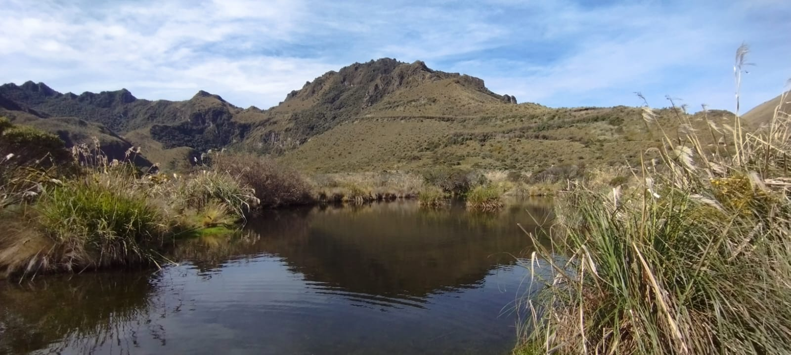

Controles del mapa
Usa estos accesos para centrar la ruta, acercarte a Malchinguí o volver a Quito sin perder contexto.

Esta página reúne una referencia visual entre Quito y Malchinguí, junto con datos básicos para planificar la salida y conectar el recorrido con el resto del proyecto.
El mapa resume el desplazamiento principal y marca puntos base para orientarte dentro del proyecto.
Usa estos accesos para centrar la ruta, acercarte a Malchinguí o volver a Quito sin perder contexto.
Empieza por un mirador o un punto natural, pasa luego por el mercado y cierra con la experiencia interactiva de leyendas para darle un final narrativo a la visita.
Las coordenadas del mapa son orientativas y sirven para explicar el proyecto de forma visual. La navegación final debe ajustarse según el punto exacto de salida.
No hace falta una logística complicada. Con una buena secuencia, el recorrido se vuelve claro, agradable y memorable.
Ubica el centro de referencia y define si quieres priorizar paisaje, mercado o una ruta más tranquila de observación.
Combina un punto natural o mirador con una parada gastronómica para equilibrar vistas, descanso y experiencia local.
Vuelve al proyecto principal y abre la sección de leyendas para darle contexto cultural a lo que viste en el trayecto.
Estas recomendaciones ayudan a que el viaje se sienta más cómodo y mejor aprovechado, especialmente si vas por primera vez.